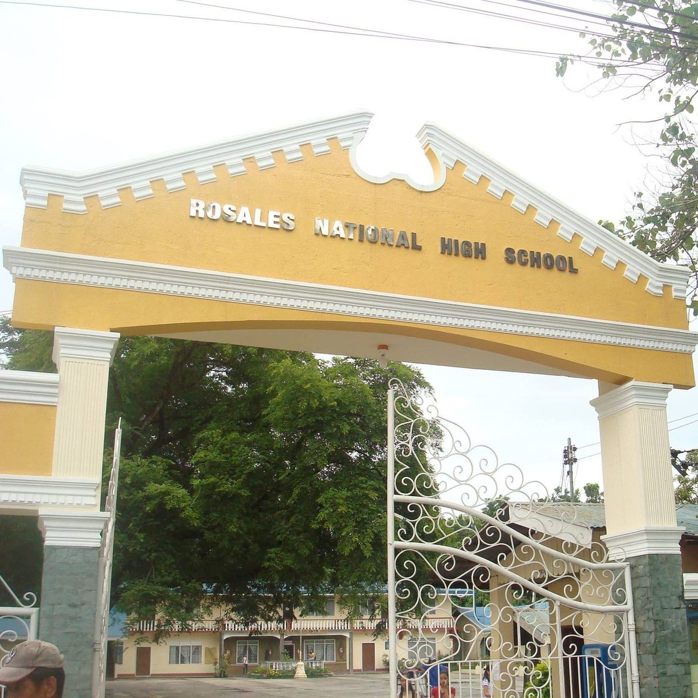

About RNHS
Rosales National High School (RNHS) is a public secondary educational institution located in Rosales, Pangasinan, established to provide quality and affordable education to its residents.
Welcome to Rosales National High School!
The school is currently implementing the K to 12 basic education program, offering both junior and senior high school in accordance with the resolution ordered by the Department of Education (DepEd).
We offer the HUMSS, STEM, ABM, and GAS strands under the Academic Track, as well as the Technical-Vocational-Livelihood (TVL) track, which equips students with technical skills for the senior high school program.


What programs does RNHS offer?
Choosing the right program helps students set their future goals and picture where they want to be — whether the plan is to become an engineer, a teacher, an accountant, or to advance in a chosen profession. Making an informed choice now supports that path later.
See Academic StrandsOur History
Rosales National High School started its journey in 1945 through the initiative of public school officials and prominent civic-spirited individuals. The founding contributors included Don Francisco delos Reyes, the late Mayor Felix Coloma, and Doña Petra Callanella Sr., among others. Originally named Rosales Junior High School, the school housed its first-year students in the Plaridel College Building after World War II interrupted operations in 1941.
The school later moved to a new location, temporarily occupying Quonset huts vacated by American soldiers. A permanent site was chosen for its conducive learning environment and strategic location, with the PTA purchasing a 72,634-square-meter lot in 1957. By the 1946–1947 school year, the school was operating on its new site with the help of donations and constructed facilities, graduating its first batch of students: 32 males and 16 females.
Over the years, Rosales National High School has experienced significant growth. Today, it remains committed to providing quality education for future generations.
Former School Principals
Mr. Isidro Fabia
1945–1947
Dr. Mauricio Origines
1947–1954
Mr. Esteban Dalope
1954–1963
Mr. Antonio N. Rosete
1963–1980
Mrs. Maria N. Monje
1980–1997
Mrs. Paulina M. Gadia (OIC)
April–July 1992
Mrs. Veronica Almeida P. Dominguez
1997–November 20, 2006
Mrs. Edna M. Maala (OIC)
November 23, 2006–February 17, 2023
Mr. Miguelito L. Luna
April 18, 2017–October 14, 2017
School Policy & Identity
Quick links to the official framework that shapes how RNHS teaches and serves its students.